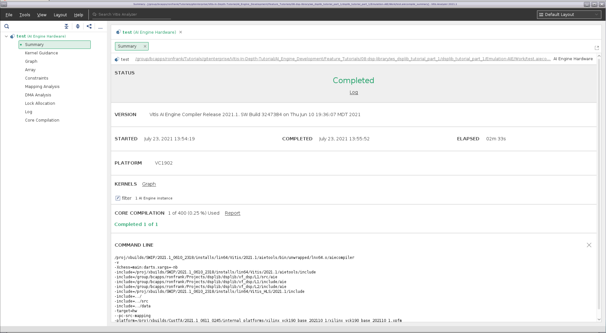
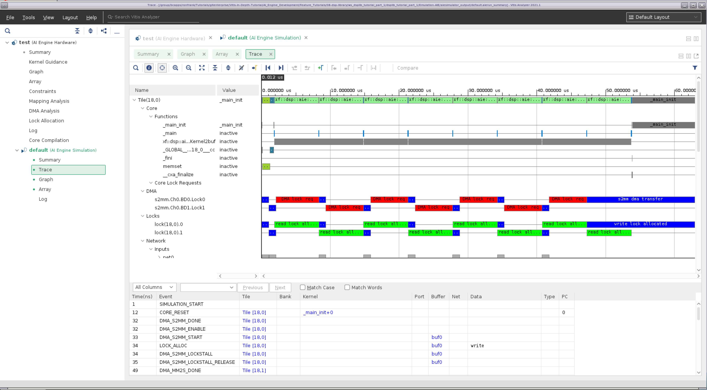
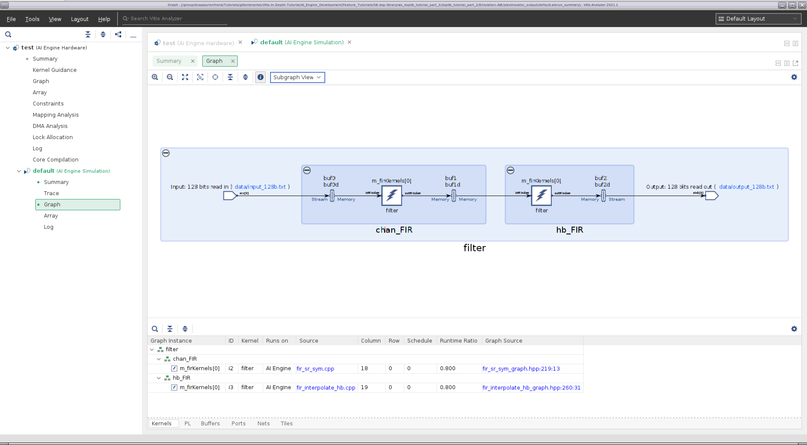
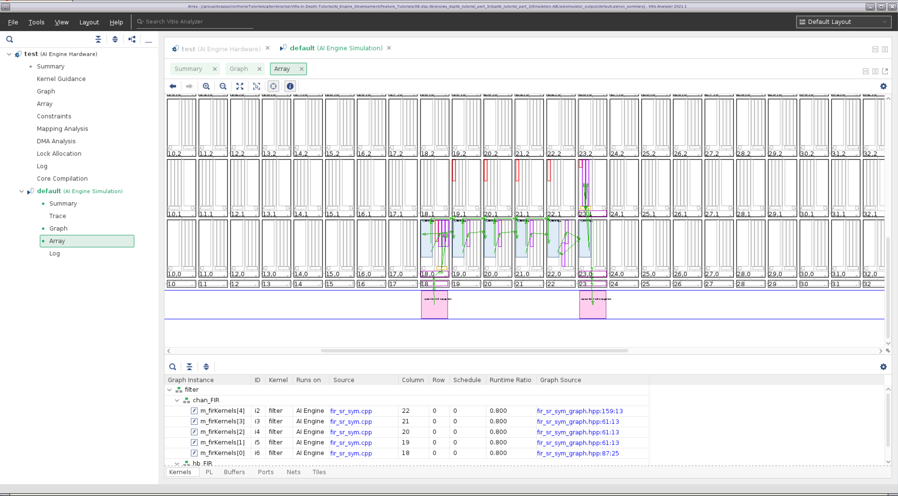

AI Engine DevelopmentSee Vitis™ Development Environment on xilinx.com See Vitis™ AI Development Environment on xilinx.com |
DSP Library Tutorial¶
Version: Vitis 2022.1
Table of Contents¶
Introduction¶
The Xilinx® Versal® adaptive compute acceleration platform (ACAP) is a fully software-programmable, heterogeneous compute platform that combines the processing system (PS) (Scalar Engines that include Arm® processors), Programmable Logic (PL) (Adaptable Engines that include the programmable logic), and AI Engines which belong in the Intelligent Engine category.
This tutorial demonstrates how to use kernels provided by the DSP Library for a filtering application, how to analyze the design results, and how to use filter parameters to optimize the design’s performance using simulation. It does not take the design to a hardware implementation, however.
Objectives¶
After completing the tutorial, you should be able to:
Build signal processing datapath using the Vitis™ application acceleration development flow
Evaluate the performance and resource utilization metrics of a design
Adjust filter parameters to meet system performance requirements
Tutorial Overview¶
This tutorial shows how to construct a simple two-stage decimation filter. This filter is not targeted at a specific real-life application, but is used to show how to use the DSP Library to construct filter chains.
Part 1 shows how to use create an AI Engine project and instantiate a parameterized FIR filter from DSPLib
Part 2 shows how to cascade filters together into a chain
Part 3 shows how to optimize performance of the filter chain by tuning individual filters
Before You Begin¶
Documentation: Explore AI Engine Architecture¶
Tools: Installing the Tools¶
Tools Documentation:
To run through this tutorial, you will need to download and install the following tools:
Install the Vitis Software Platform 2022.1
Obtain licenses for the AI Engine tools
Download the DSP Library
Download and setup the VCK190 Vitis Platform for 2022.1
Environment: Setting Up Your Target Platform Environment¶
When the elements of the Vitis software platform are installed, follow the steps below:
Set up your
PLATFORM_REPO_PATHSenvironment variable based upon where you downloaded the platform.Set up your
DSPLIB_ROOTenvironment variable at the location you downloaded the DSP Library.
Other Tutorials: Learn Basic Vitis Compiler and AI Engine Concepts¶
For novice users, following link provides tutorials to understand the basic Vitis compiler concepts and building simple AI Engine designs:
Part 1: Creating a Single Kernel Graph¶
Part 1 of this tutorial will:
Shows a basic Makefile for AI Engine and X86 compilation, simulation and visualization.
Link in the DSPLib functions
Create a simple graph containing a parameterized DSPLib FIR filter.
Compile and simulate the design
Evaluate the results.
Understanding the Source Files¶
To begin this tutorial, go to the part 1 directory:
```bash
cd part_1
```
List the files available in aie/src:
ls aie/src
fir_graph.h system_settings.h test.cpp
The system_settings.h files is a standard header file that defines the constants used in this project. It includes the header file “<adf.h>”. This is the Adaptive Data Flow (ADF) header file, which provides the classes used for specifying graphs. It also includes the FIR Filter kernel’s header file, fir_sr_sym_graph.hpp.
The design itself it implemented in fir_graph.h. A graph is used to define elements and the connections between them that make up the design. We will go over some of the key aspects of this file.
using namespace adf
namespace dsplib = xf::dsp::aie;
This simplifies accessing the ADF and DSPLib classes.
The FIR filter taps are declared as a vector, and initialized:
std::vector<int16> chan_taps = std::vector<int16>{
-17, -65, -35, 34, -13, -6, 18, -22,
.... };
The following line instantiates the DSPLib FIR filter kernel, named chan_FIR (channel filter):
dsplib::fir::sr_sym::fir_sr_sym_graph<DATA_TYPE, COEFF_TYPE, FIR_LEN_CHAN, SHIFT_CHAN, ROUND_MODE_CHAN, WINDOW_SIZE, AIES_CHAN> chan_FIR;
The filter’s template parameters and their meanings can be found in UG1295.
port<input> in;
port<output> out;
Specifies the input and output ports for this graph.
connect<>(in, chan_FIR.in);
connect<>(chan_FIR.out, out);
These statements connect our graph’s input and outputs to the FIR filter’s input and outputs, respectively.
location<kernel>(chan_FIR.m_firKernels[0]) = tile(18,0);
This statement specifies a location attribute for the filter kernel. It specifies the X/Y location of the AI Engine tile within the AI Engine array in which to place the kernel. Location placements for kernels are optional, but shown here to illustrate how physical constraints can be incorporated into the source code. The results of this statement will be seen later when viewing the compilation results.
There is a second graph that will instanciate this FIRGraph and connect it to the PLIO elements which are points at which data can be moved onto and off of the AI Engine array:
class TopGraph : public graph
{
public:
input_plio in;
output_plio out;
FirGraph F;
TopGraph()
{
in = input_plio::create("128 bits read in", adf::plio_128_bits,"data/input_128b.txt", 250);
out = output_plio::create("128 bits read out", adf::plio_128_bits,"data/output_128b.txt", 250);
connect<> (in.out[0],F.in);
connect<> (F.out, out.in[0]);
};
};
The third file, test.cpp, can be considered the testbench component. It is not intended for hardware implementation, but rather to drive the simulation. The main function is specified, which runs the simulation.
int main(void) {
filter.init() ;
filter.run(NUM_ITER) ;
filter.end() ;
return 0 ;
}
Compile the application¶
The Makefile is very simple. It allows the user to compile for 2 different targets x86 and hw, visualize the compiler output in vitis_analyzer, run an AI Engine or X86 simulation and visualize also the output in vitis_analyzer.
Currently the Makefile does not specifies where the DSP Lib includes are located. The first step of this tutorial will consist in adding the following lines, on line 37:
######### Add DSP include files location #########
DSP_FLAGS := --include=$(DSPLIB_ROOT)/L1/src/aie
DSP_FLAGS += --include=$(DSPLIB_ROOT)/L1/include/aie
DSP_FLAGS += --include=$(DSPLIB_ROOT)/L2/include/aie
You type make aie to run the following command:
aiecompiler -target=hw $(AIE_FLAGS) $(DSP_FLAGS) $(AIE_GRAPH_FILES)
This compiles the design and maps it to the AI Engine Tiles.
Visualizing the compilation results is performed by typing make compviz which runs the following command:
vitis_analyzer $(AIE_OUT_DIR)/test.aiecompile_summary
After vitis_analyzer opens, it will display the Summary page, which provides a brief summary of the project.

Selecting Graph on the navigation bar shows a diagram of the filter implementation. It illustrates the data connectivity points into and out of the graph (128-bit interfaces), and the symmetrical FIR filter kernel being implemented on a single tile with ping-pong buffers on either side of it.

Selecting Array on the navigation bar shows the physical implementation of the design on the AI Engine array. Here you can see the PLIO interfaces in pink, the AI Engine tile that implements the kernel in blue, and the ping pong buffers in purple. Note the kernel is located in tile (18,0), which was specified in fir_filter.h. Clicking on the components on the diagram will take you to the appropriate tab below which provides a description of the element. Conversely you can select the various element tabs (Kernels / PL / Buffers / Ports / Nets / Tiles) and click on a component to see where it is located on the array.

You can select the other entries on the navigation bar to see additional implementation details.
When you are done examining the design, click File -> Exit
Running the Design through Simulation¶
We can now run the simulation for this AI Engine application. I order to get a runtime trace of this simulation we need to specify it to the simulator. Add the following flag (--dump-vcd=sim) in the command belonging to the aiesim rule:
aiesim:
aiesimulator --pkg-dir=$(AIE_OUT_DIR) --dump-vcd=sim
Type make aiesim to run the AI Engine simulation, and it will automatically generate the trace of this simulation stored in the file sim.vcd.
Using Vitis Analyzer to look at the Simulation Results¶
Type make aieviz to visualize the output of the simulation in vitis_analyzer.
Selecting Trace on the navigation bar shows the simulation trace. Here you can see kernel activity, the DMA transfer activity, locks for the ping-pong buffers, etc.

Part 2: Creating a Multi Kernel Graph¶
Part 2 of this tutorial will:
demonstrate how to connect together filters to create a filter chain.
show how to identify areas for optimization within the chain
Changes to the Filter Graph from Part 1¶
For Part 2, we have cascaded a halfband filter after the FIR filter that was in the design in part 1.
In the system_settings.h file, constants for the halfband filter have been added, as well as the kernel’s header file, fir_interpolate_hb_graph.hpp.
In the file fir_graph.h, the notable changes are the following:
The constants for the second filter have been added:
std::vector<int16> hb_taps = std::vector<int16>{
23, -63, 143, -281, 503, -845, 1364, -2173,
3557, -6568, 20729, 32767};
The second (halfband) filter has been instantiated:
dsplib::fir::interpolate_hb::fir_interpolate_hb_graph<DATA_TYPE, COEFF_TYPE, FIR_LEN_HB, SHIFT_HB, ROUND_MODE_HB, WINDOW_SIZE> hb_FIR;
Also, the output of the channel FIR filter is now cascaded into the halfband filter, whose output is now connected to the graph’s output:
connect<>(chan_FIR.out, hb_FIR.in);
connect<>(hb_FIR.out, out);
The class TopGraph and testbench file, test.cpp, are unchanged.
Build AI Engine Emulation¶
Type make aie to build compile the graph.
Running the Design through Simulation¶
Type make aiesim to run the simulation and save the trace.
Using Vitis Analyzer to look at the Compilation and Simulation Results¶
Type make aieviz to start vitis_analyzer.
Selecting Graph on the navigation bar shows a diagram of the filter implementation. In this version of the graph, we can now see the two kernels, each implemented in the own AI Engine tile.

Selecting the Array option on the navigation bar shows the physical implementation of the design on the AI Engine array. You can see the two kernels are located in the tiles specified by the location constraints.

Selecting the Trace option on the navigation bar shows the tile (18,0) (the chan_FIR kernel) spending most of its time running kernel code, while tile (19,0) (hb_FIR) spends significant time being idle in _main. chan_FIR is the bottleneck in this datapath, which is not surprising because it has many more taps to compute.

In part 3, we are going to use filter parameters to attempt to increase the performance of the chan_FIR filter, to increase overall performance of the chain.
Part 3: Optimizing Filter Performance¶
Part 3 of this tutorial will:
demonstrate how to use the CASC_LEN parameter to increase filter performance.
Changes to the Filter Graph from Part 1¶
For Part 3, we are going to increase the performance of the design by adjusting the TP_CASC_LEN parameter on the chan_FIR filter.
In system_settings.h, the following parameter has been changed:
#define AIES_CHAN 5
informing the library element to allocate 5 AI Engines to the FIR filter kernel.
In fir_graph.h, the only change here is using a for loop to lock the location constraints of the chan_FIR AI Engine tiles.
for (int i=0; i < AIES_CHAN; i++) {
location<kernel>(chan_FIR.m_firKernels[i]) = tile(18+i, 0);
}
location<kernel>(hb_FIR.m_firKernels[0]) = tile(23,0);
The testbench file, test.cpp, is unchanged.
Build AI Engine Emulation¶
Type make aie to build compile the graph.
Running the Design through Simulation¶
Type make aiesim to run the simulation and save the trace.
Using Vitis Analyzer to look at the Compilation and Simulation Results¶
Type make aieviz to start vitis_analyzer.
Selecting Graph on the navigation bar shows a diagram of the filter implementation. It illustrates the data connectivity points into and out of the graph (128-bit interfaces), and the symmetrical FIR filter kernel being implemented on five tiles, followed by a single tile implementing the halfband filter.

Selecting the Array option on the navigation bar shows the physical implementation of the design on the AI Engine array; with the tile’s locations being determined by the location constraints.

Selecting the Trace option on the navigation bar now shows the channel filter tiles ((18,0) through (22,0)) almost fully occupied with processing the data; the computational load between the channel filter’s constituent engines now matching that of the halfband filter (23,0). The design now completes in 8 iterations in 24 microseconds, compared to 57.

Conclusion¶
This tutorial has demonstrated the following:
How to create a Makefile to handle an AI Engine Project
How to create a graph based design description and described the basic element required
How to incorporate the FIR filter elements provided by the DSP Library
How to compile and simulate the design
How to view and interpret the results of an AI Engine based compilation and simulation
How to adjust FIR parameters to tune the design performance
In doing so, it has hopefully provided a foundation upon which the user can begin to create their own designs in Vitis using the DSP Library.
References¶
The following documents provide supplemental material useful with this tutorial.
UG1076 Versal ACAP AI Engine Programming Environment¶
Contains chapters on how to develop AI Engine graphs, how to use the Ai Engine compiler, and AI Engine simulation, and performance analysis.
Vitis DSP Library (DSPLib) Documentation¶
Contains information regarding the DSPLib example kernels used by this tutorial.
Vitis Unified Software Development Platform 2022.1 Documentation¶
Following links point to Vitis software platform related documents referred in this tutorial:
License¶
Licensed under the Apache License, Version 2.0 (the “License”); you may not use this file except in compliance with the License.
You may obtain a copy of the License at http://www.apache.org/licenses/LICENSE-2.0
Unless required by applicable law or agreed to in writing, software distributed under the License is distributed on an “AS IS” BASIS, WITHOUT WARRANTIES OR CONDITIONS OF ANY KIND, either express or implied. See the License for the specific language governing permissions and limitations under the License.
XD022 | © Copyright 2021-2022 Xilinx, Inc.